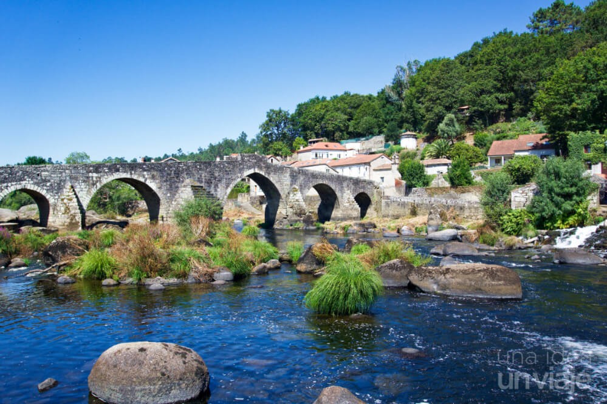

Fervenza do Pozo Negro
Hermosa cascada situada en los alreedores de la aldea de Ons
Fervenza do Pozo Negro
Lugar tranquilo y relajante donde hacer un poco de senderismo

Ponte Maceira
Puente románica construida en el Negreira

Ponte Maceira
Famosa por su bonita arquitectura alrededor del río Tambre

Mirador Monte do Corto
Situado en la parroquia de Campolongo, Negreira

Mirador Monte do Corto
Se levanta una cumbre de 509 metros denominada Monte do Cotro de Eiras
Torres de Altamira
Restos del Castillo que se alzaba en uno de los puntos más altos de Brión
Torres de Altamira
Perfecto para una visita rápida llena de historia